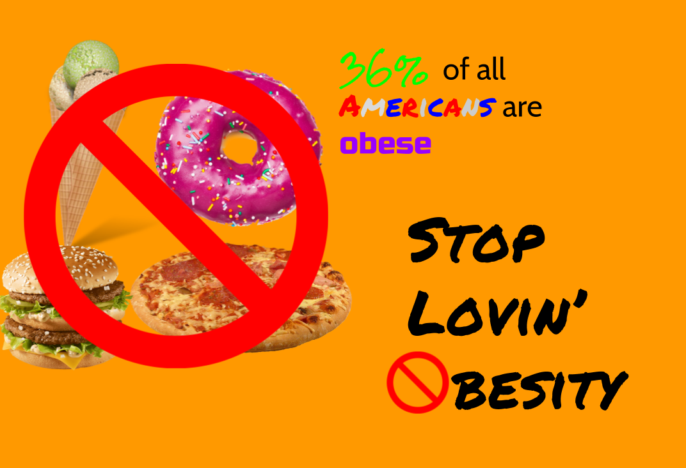

The Growing Obesity Problem
In 1990, obesity emerged as a serious issue as the BMI of the average person skyrocketed. Today, obesity is still a huge problem. Over 2 in 3 American adults are overweight or obese. Additionally, America spends about $150 billion dollars on obesity-related issues each year. Obesity has worsened over the years thanks to the growing unhealthiness of our foods and our new sedentary lifestyles. Studies show if this process of "fattening" America continues, by 2030, 51% of the American population will be classified as "obese". As portions increase and Americans spend more time sitting at desk jobs, the obesity problem worsens.
Obesity is a disease. More and more people are becoming overweight. This trend can only be stopped by taking action. Here are some ways to prevent obesity in your household.
- Eat 2 cups of fruit each day.
- Eat 2.5 cups of vegetables each day.
- Exercise for at least 30 minutes each day.
- Eat whole grain foods and avoid highly processed foods with refined sugars and grains.
- Cut down on sugar and candy
- Lower fat intake and avoid greasy and oily foods
Obesity comes with a plethora of health problems. Heart disease occurs 10 times more often in obese people. Type 2 diabetes has become more common as a result of obesity. 300,000 premature deaths in the US are all a result of the exponential increase of obesity in adults and children. The list of problems seems endless. Obesity causes:
- Arthritis
- High blood pressure
- Sleep apnea
- Cancer
- Metabolic syndrome
- Inactivity
- Depression
- Eating disorders
- Widthdrawl, when trying to stop